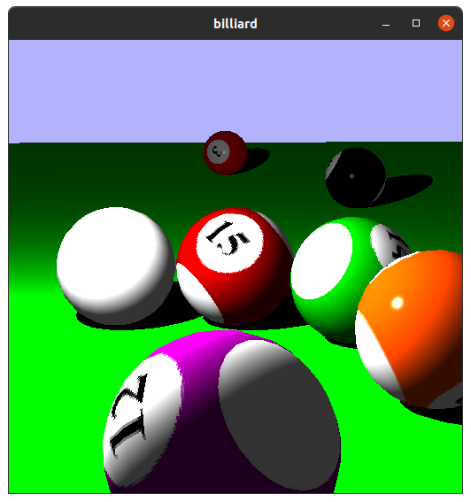
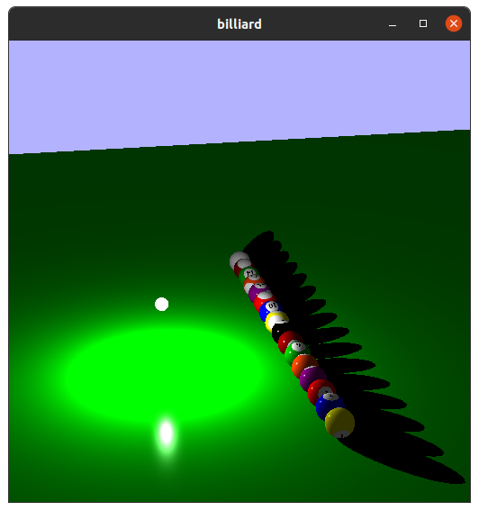

this page will contain overviews of my favorite programming projects.
It's still in development, so please check out my github portfolio in the meantime.
back to main page
Rendering billiards
This project demonstrates the generation and texturing of spherical meshes, a simple version of the Blinn-Phong lighting model, and fake shadows.
The light source and the camera can be moved by the user's keyboard, and the camera can enter follow-mode to follow behind one of the billiard balls.
All of the linear transformations in this project make use of my linear algebra library, which can be found here: linalglib

closeup
 animated demo
animated demo

shadows